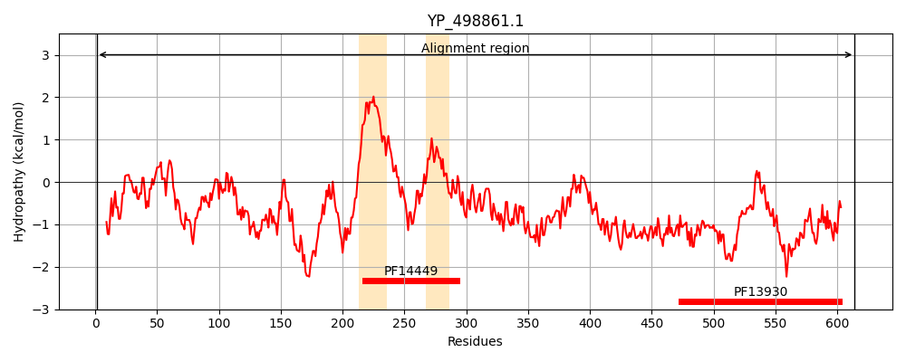
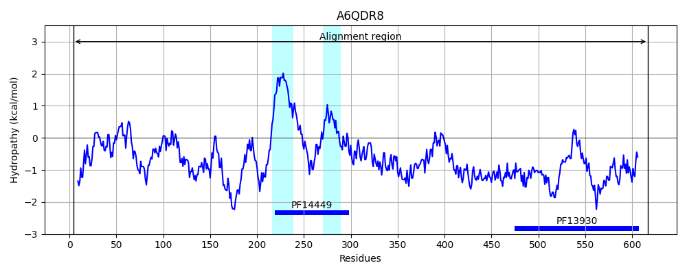
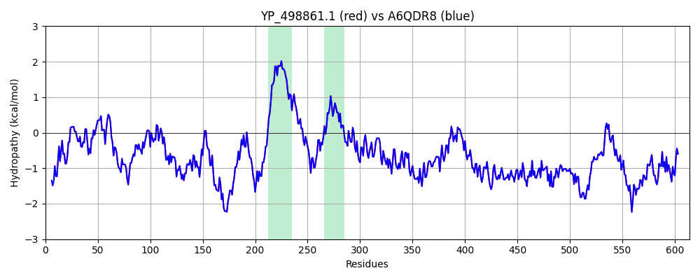

Hit Accession: A6QDR8
Hit TCID: 3.A.7.17.1
Hit Description: gnl|BL_ORD_ID|622 gnl|TC-DB|A6QDR8|3.A.7.17.1 Putative uncharacterized protein OS=Staphylococcus aureus (strain Newman) GN=NWMN_0228 PE=4 SV=1
Mach Len: 614
e:0.000000
Query TMS Count : 2
Hit TMS Count: 2
TMS-Overlap Score: 2.200000
Predicted Substrates:CHEBI:36080;protein, CHEBI:36080;protein
BLAST Alignment:
Score: 3157 , Bit scores: 1220 bits, E-value: 0.0e+00, Alignment length: 614, Percentage identity: 100
Query: 1 MTKDIEYLTADYDNEKSSIQSVIDAIEGQDFLDVDTTMDDAVSDVSSLDEDGAISLTSSVVGPQGSKLMGYYQNELYDYASQLDSKMKEIIDTPFIEDIDKAFKGITNVKLENILIKNGGGHGRDTYGASGKIAKGDAKKSDSDVYSIDEILKSDQEFVKVIDQHYKEMKKEDKKLSKSDFEKMMTQGASCDYMTVAEAEELEEQKKKEEAIEIAALAGMVVLSCINPVAGAVAIGAYSAYSAANAATGKNIVTGRKLSKEERIMEGLSLIPLPGMGFLKGAGKSLMKLGFKGGEKFAVKTGLQKTMQQAVSRISPKMGMMKNSVLNQSRNFAQNTHVGQMLSNMRGQATHTVQQSRNWIGQQAQNVKRIVNNGLDKEIAHPFKQQLAPAGMGGIKFAETTTLRNMGQNIKRAVTPQNHVTHGPKDSMVRSEGKHSISSHEMNSSKYVESPNYTKVEFGEHYARLRPKKLKANIEYTTPTGHIYRTDHKGRIKEVYVDNLSLKDGDRNSHAQRTVGGEDRLPDDDGGHLIARMFGGSKDIDNLVAQSKFINRPFKEKGHWYNLEKEWQEFLNSGKEVKNIKMEVKYSGNSQRPTIFKVEYEINGERNIRRILNK 614
MTKDIEYLTADYDNEKSSIQSVIDAIEGQDFLDVDTTMDDAVSDVSSLDEDGAISLTSSVVGPQGSKLMGYYQNELYDYASQLDSKMKEIIDTPFIEDIDKAFKGITNVKLENILIKNGGGHGRDTYGASGKIAKGDAKKSDSDVYSIDEILKSDQEFVKVIDQHYKEMKKEDKKLSKSDFEKMMTQGASCDYMTVAEAEELEEQKKKEEAIEIAALAGMVVLSCINPVAGAVAIGAYSAYSAANAATGKNIVTGRKLSKEERIMEGLSLIPLPGMGFLKGAGKSLMKLGFKGGEKFAVKTGLQKTMQQAVSRISPKMGMMKNSVLNQSRNFAQNTHVGQMLSNMRGQATHTVQQSRNWIGQQAQNVKRIVNNGLDKEIAHPFKQQLAPAGMGGIKFAETTTLRNMGQNIKRAVTPQNHVTHGPKDSMVRSEGKHSISSHEMNSSKYVESPNYTKVEFGEHYARLRPKKLKANIEYTTPTGHIYRTDHKGRIKEVYVDNLSLKDGDRNSHAQRTVGGEDRLPDDDGGHLIARMFGGSKDIDNLVAQSKFINRPFKEKGHWYNLEKEWQEFLNSGKEVKNIKMEVKYSGNSQRPTIFKVEYEINGERNIRRILNK
Sbjct: 4 MTKDIEYLTADYDNEKSSIQSVIDAIEGQDFLDVDTTMDDAVSDVSSLDEDGAISLTSSVVGPQGSKLMGYYQNELYDYASQLDSKMKEIIDTPFIEDIDKAFKGITNVKLENILIKNGGGHGRDTYGASGKIAKGDAKKSDSDVYSIDEILKSDQEFVKVIDQHYKEMKKEDKKLSKSDFEKMMTQGASCDYMTVAEAEELEEQKKKEEAIEIAALAGMVVLSCINPVAGAVAIGAYSAYSAANAATGKNIVTGRKLSKEERIMEGLSLIPLPGMGFLKGAGKSLMKLGFKGGEKFAVKTGLQKTMQQAVSRISPKMGMMKNSVLNQSRNFAQNTHVGQMLSNMRGQATHTVQQSRNWIGQQAQNVKRIVNNGLDKEIAHPFKQQLAPAGMGGIKFAETTTLRNMGQNIKRAVTPQNHVTHGPKDSMVRSEGKHSISSHEMNSSKYVESPNYTKVEFGEHYARLRPKKLKANIEYTTPTGHIYRTDHKGRIKEVYVDNLSLKDGDRNSHAQRTVGGEDRLPDDDGGHLIARMFGGSKDIDNLVAQSKFINRPFKEKGHWYNLEKEWQEFLNSGKEVKNIKMEVKYSGNSQRPTIFKVEYEINGERNIRRILNK 617 | Protein Hydropathy Plots: |
|---|
|  |  |
Pairwise Alignment-Hydropathy Plot:
|
|---|
|  |